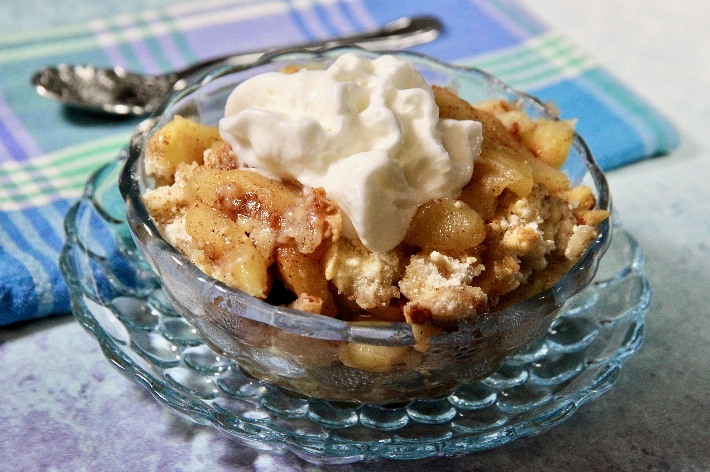

Lasagna

Appfelkuchen oder so
- Preheat the oven to 350 degrees F (175 degrees C).
Combine 3 tablespoons sugar and cinnamon in a bowl.
- Layer apples in an ungreased 9x13-inch baking pan,
sprinkling each layer with cinnamon-sugar.
- Combine flour, 1 cup sugar, egg, and baking powder with a fork.
Sprinkle over apples. Lightly sprinkle water over top.
- Bake in the preheated oven until topping is golden brown, about 30 minutes.